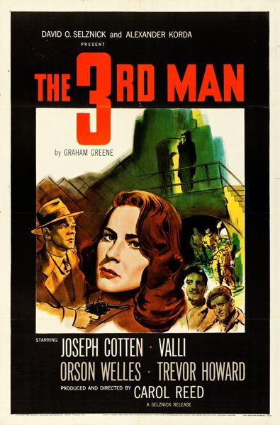

The Third Man
Starring: Orson Welles, Joseph Cotten, Alida Valli
Director: Carol Reed
Writer: Graham Greene, Orson Welles, Alexander Korda
Producer: Alexander Korda, David O. Selznick, Carol Reed
Studio: London Films
The Third Man is a 1949 film noir directed by Carol Reed, written by Graham Greene, and starring Joseph Cotten, Alida Valli, Orson Welles and Trevor Howard. Set in post-World War II Allied-occupied Vienna, the film centres on American writer Holly Martins (Cotten), who arrives in the city to accept a job with his friend Harry Lime (Welles), only to learn that he has died.
Trivia
- Won the BAFTA Award for Best British Film.
- Won the Academy Award for Best Cinematography, Black-and-White.
- Won the Cannes Film Festival Grand Prix.
- Also nominated for: Academy Award for Best Director; BAFTA Award for Best Film; Academy Award for Best Film Editing; Directors Guild of America Award for Outstanding Directing – Feature Film.
- Before writing the screenplay, Graham Greene worked out the atmosphere, characterisation, and mood of the story by writing a novella as a film treatment.
- The novella is narrated in the first person from Calloway's perspective.
- In 1948, Greene met Elizabeth Montagu in Vienna; she gave him tours of the city, its sewers, and some of its less reputable nightclubs.
Filming Locations
- Austria
- Vienna
Previous Showings
9 Runs • 6 Festivals
12,744 tickets sold
Original Billings: 1 run (April 23, 1950)
Original Run: April 23, 1950 (Sunday - Tuesday)
All runs on record (9):
- April 23, 1950 (Sunday - Tuesday)Joseph Cotten, Orson Welles, Valli
- December 12 - 15, 1992 · 1,935 ticketsw/ Notorious
- October 29, 1993 · 693 ticketsw/ Odd Man Out
- September 23 - 30, 2000 · 3,021 ticketsSummer 2000w/ Sunset Boulevard
- October 15 - 16, 2011 · 968 ticketsFall 2011w/ Citizen Kane
- October 3 - 6, 2013 · 1,929 ticketsThe Best of Bogart and Film Noir Classicsw/ The Big Sleep
- October 22 - 23, 2016 · 1,017 ticketsVienna and the Movies Curated by David Thomson. Booklets available at the theatrw/ Act of Violence
- July 20 - 23, 2019 · 1,734 ticketsSummer 2019w/ Citizen Kane
- October 5 - 6, 2024 · 1,447 ticketsFilm Noir plus Val Lewtonw/ Key Largo